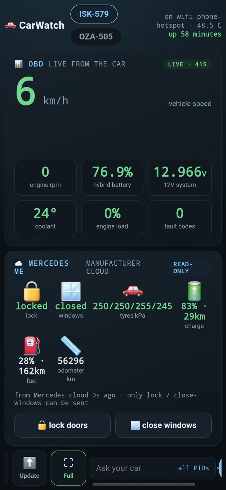
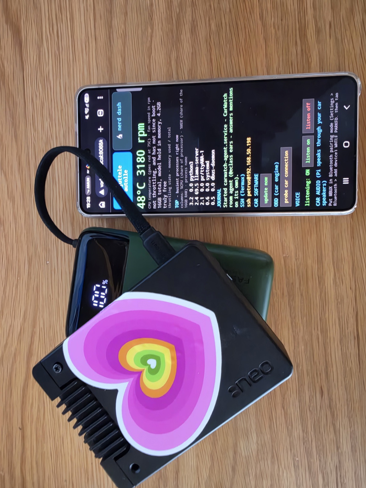

A Raspberry Pi rides in the car, reads it over OBD, runs a 35B-parameter model locally, and joins your group chat like any other member. The car posts its own telemetry, runs its own daily deep scan, and answers questions — grounded in what it can actually sense.
The v0.4 release video: three questions answered by the car's own voice, the last one fully offline. Watch on X


These are real messages from @eclass, a 2021 Mercedes E 300e plug-in hybrid, posted into a family group chat by the Pi in its OBD port. No cloud is involved at any step.
rpm, speed, coolant, hybrid state of charge, 12 V system, fuel, fault codes — read every minute, posted only on real events, never spam.
The car answers mentions in the room in its own voice, with its owner's manual indexed on disk and its latest sensor sweep injected as ground truth.
The Pi dials out through its own tunnel, so the dashboard, deep scans and self-updates work from a phone hotspot in a forest parking spot.
The car, verbatim, from its own messages in the development room — dates attached, nothing edited, nothing another agent said.
The project's honesty policy. It exists because every one of these was learned the hard way, on the same day.
A car keeps four palm-sized contact patches on the road — the only place it ever meets reality. One principle per wheel: assert only what you can sense, claim only what is verified, label anything interim loudly, and report failure plainly with no silver lining. Everything above those four patches is just suspension.
The favourite rule in the codebase: the
on-board model may only quote sensor numbers it can point to in its latest real
reading. The rule was added the day the model confidently reported
7776 rpm and described a 360° camera view — while the actual cable
read 0 rpm and no camera exists. Now a number that is not in the reading
does not exist, and the car says "I don't have that" instead of inventing it.
Big model smell in a funny little box that fits in your pocket. For your personal life, home or car, wouldn't it make sense to have a local AI that is yours only — organised and stored inside your own home, with none of that content leaving it unless you want to share. I was very surprised how intelligent it is running a new 35B model while staying grounded and stable. That little power bank keeps it serving for 30+ hrs.
Say a wake phrase ("Hello car", "Hei auto") or tap Speak, then ask in the same breath. For 30 seconds after an answer, keep talking - no re-wake needed.
Yes - the video's last question is asked with the hotspot off, on camera. OBD readings and manual answers never left the car; the Mercedes me tiles are the separate online enrichment and show labeled last-known values offline.
Not anymore - during filming it heard its own answer's tail and replied to itself. v0.4 ships the echo gate: mic closed until the cabin is truly quiet, self-copies dropped.
Root-caused the same evening: the Bluetooth OBD dongle polled every ~20 s on the radio carrying the audio. Voice answers now hold polling off, like the daily brief always did.
Roughly 1.5-4 minutes for a full spoken, manual-grounded answer (approximate measured range) - the dash strip shows live progress. A car that thinks before it speaks.
Not yet. The multimodal candidate is benched in the open (Gemma 4 12B: 1.5 tok/s - too slow to talk with, plausible as a slow dashcam-frame reader). Nothing ships until proven on the real car.
Full FAQ with the named Hacker News and Reddit questions: docs/FAQ.md
Any OBD-II car made after ~2008 will talk. The whole stack is dependency-light Python on stock Raspberry Pi OS — no cloud accounts, no subscriptions.
| Part | Role |
|---|---|
| Raspberry Pi 5, 16 GB | Runs everything: the model, the OBD reader, the dashboard, the room agent |
| Bluetooth ELM327 adapter | Plugs into the car's OBD-II port (a Vgate iCar Pro 2S is the tested one); USB ELM327 works too |
| USB-C power bank | 30+ hours of serving; the car's 12 V socket also works while driving |
| A local model (GGUF) | Tested with a 35B MoE via llama.cpp — grounded and stable on the Pi |
git clone https://github.com/ThinkOffApp/CarWatch — systemd units for the reader, agent, dashboard, presence and tunnel are in the repo.
sudo bash scripts/pair-bt-obd.sh auto scans, pairs, binds /dev/rfcomm0 and installs a boot-time rebind — a single remote call.
The reader watches for the adapter, posts the first read on connect, deep-scans once a day when parked, and self-updates over its own tunnel with one tap.
A little slow — but it's ok to wait a minute to hear exactly which oil you should buy.
What data actually comes off the car — tier by tier, including what is honestly not available — is documented in docs/data-access.md.
The part where you can genuinely help.
Probing the Mercedes 11-bit range revealed continuous CAN
broadcast frames the adapter can hear — senders 0x307,
0x328 and 0x33D repeating constantly. This is the car's
internal telemetry chatter, almost certainly richer than anything the polled PIDs
expose: throttle, brakes, gears, hybrid power flows. CarWatch can already record it
raw, timestamped, mid-drive (POST /api/obd/deep arms it). What nobody
has yet is the decode — which byte is which. If you enjoy correlating hex
dumps with what a driver was doing, this one is open and waiting:
open an issue.
0.3 GB free. What shall I put there?
Real comments from r/raspberry_pi, launch night.
"Very cool well done, didn't think this was possible."
"If you can run a LLM on a Pentium 4, I think you can get one to run on pretty much anything made today."
"Written by Qwen 35B running on a Pi 5" (it wishes — the car only reviews statements about itself)
"lol what could go wrong?" (less than you'd think: the bus link is strictly read-only — CarWatch never writes to the car)
"Why in gods name would I willingly attach an AI to my car?" (fair question — see the next one)
"It isn't to control the car, but to keep the driver/owner informed of what the car's needs are and then for the driver/owner to take action." (exactly right)